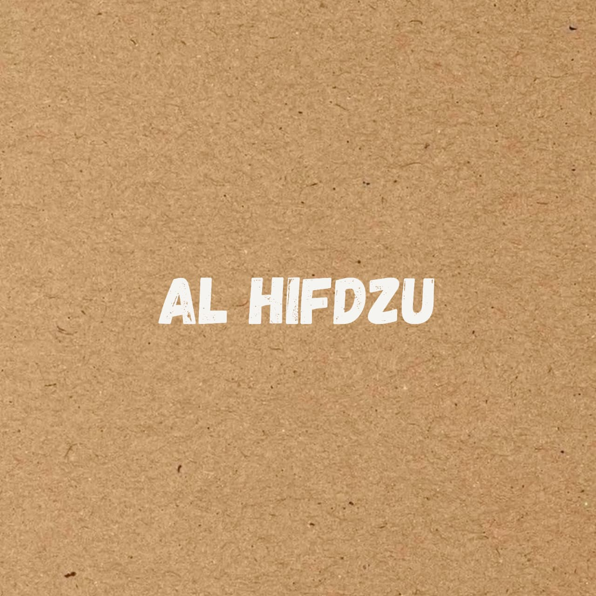

21 Okt 2026
•
Tips Belajar
Menghidupkan Kembali Metode Menghafal: Apakah Cocok untuk Semua Orang?
Mengenal tradisi belajar para ulama, pengalaman pribadi dengan metode hafalan, serta pentingnya mengintegrasikan pemahaman dan ingatan dalam menuntut ilmu.
Baca Artikel